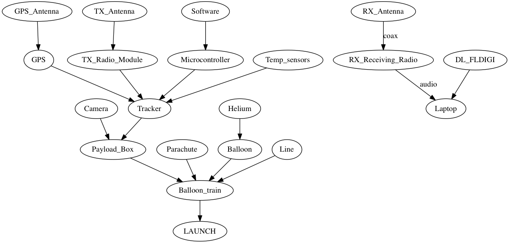
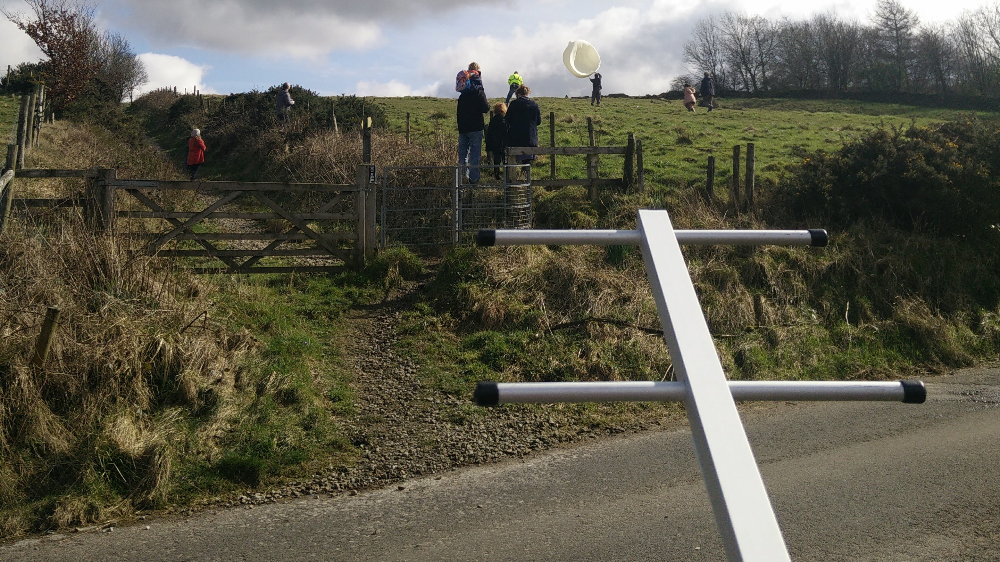
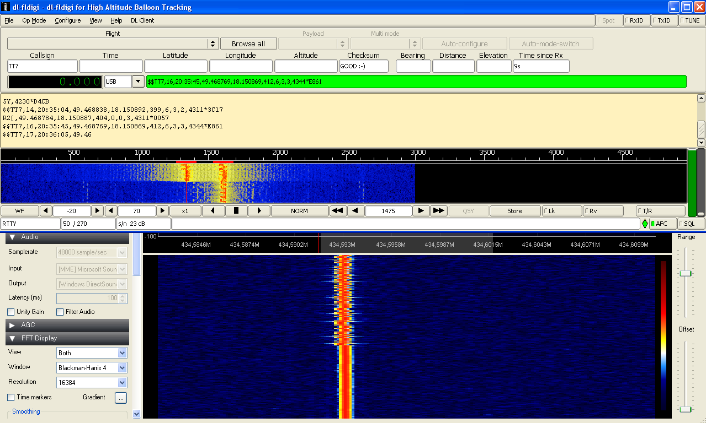
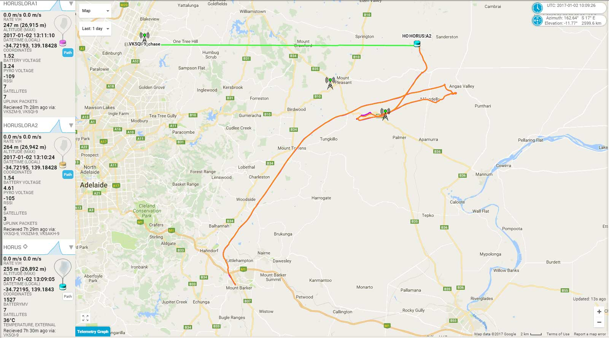

Manchester Space Programme
Technical
By Harvy / @mcrspaceprog
https://manchesterspaceprogramme.org/presentation
Types of Flight
Tracking
Space
Types of Flight
- High Altitude Balloon
- Pico Balloon
- Rocket
Tracking
Space
High Altitude Balloon
- MSPs only delivery vehicle
- 2m diameter at ground level
- Helium gas
- Short, high altitude flights
HAB Payload
- 1m^3 payload and 750g
- Transmits on 10mW of power
- Uses RTTY (at 300 baud) as radio protocol
- Carries camera and sensor data
Types of Flight
- High Altitude Balloon
- Pico Balloon
- Rocket
Tracking
Space
Pico Balloon
- Party / Foil Balloon
- Long, low altitude
- 1 - 38 g lift
- Needs solar power
Pico Payload
- About 20g
- Draws 60mA
- Transmits both RTTY and LoRa
- Extreme budgeting
Types of Flight
- High Altitude Balloon
- Pico Balloon
- Rocket
Tracking
Space
Rocket
- Solid Fuel in differing sizes
- Low altitude
- Much more dangerous
- Weight distribution
Rocket Payload
?
Types of Flight
Tracking
Space




Types of Flight
Tracking
Space
- Cube Sat
- Ground station
- Satellite Tracking